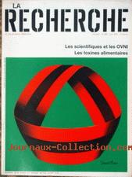

La recherche n° 102 du 1er, titrant sur Les scientifiques et les OVNI
A Rueil-Malmaison (Hauts-de-Seine) un témoin observe
durant 1 phénomène rouge triangulaire se déplacer du nord au sud dans le ciel, sans entendre
aucun bruit ni voir de traînée GEPAN: PAN
classé C.
A Nuits-Saint George (Côte d'Or), 1 automobiliste
observe dans son rétroviseur 1 boule lumineuse orangée qui semble la suivre jusqu'à une agglomération où apeurée
elle klaxonne pour avertir les habitants. Une personne sortira de chez elle mais refusera d'aller voir cette
boule. Reprenant sa route, elle verra l'objet jusqu'à chez elle. Le témoin ressent des effets physiques et le
tableau de bord s'éteint. Ce phénomène ne fait aucun bruit et se situe à basse altitude dans le nord-nord-ouest.
Elle ne croisera aucun véhicule et aucun autre témoignage ne sera recueilli sur ce phénomène Selon le GEPAN, malgré le manque d'informations, la carte du ciel ce soir là
nous indique la présence de Jupiter paticulièrement visible (magnitude -1,47), de Pollux (magnitude 0,98) et de Capella. L'hypothèse d'une observation astronomique est probable mais ne peut être confirmée. Le témoin a subi une frayeur importante qui explique probablement son comportement et les effets ressentisGEPAN: PAN
classé C.
À Bourgneuf-en-Retz (Loire Atlantique), plusieurs
personnes voient au-dessus de la baie 1 fumée verticale qui se dissipe progressivement. Quelques mn plus tard, 1
phénomène sphérique rouge feu traverse le ciel selon une trajectoire rectiligne en direction du sud-ouest avec une
courbe descendante. D'allure assez lente, ce phénomène est suivi d'une fumée blanche ou grisâtre. Les observations
ont duré quelques secondes sans qu'aucun bruit ne soit entendu Selon le GEPAN, l'enquête de gendarmerie auprés de la marine a permis de savoir que des essais de fusées de détresse et éclairantes ont été
réalisés. Cependant les informations fournies sont trop imprécises pour valider cette hypothèseGEPAN: PAN
classé C.
A Cande (Maine-et-Loire), après un épisode orageux,
un témoin aperçoit par une fenêtre au sud-ouest 1 lumière puissante se déplaçant lentement au-dessus de l'horizon
avec parfois des allers-retours verticaux. Selon la position de la lumière, le témoin aperçoit des cercles lumineux.
Une 2nde lumière clignotante et venant du nord apparaît passant au-dessus de la 1ʳᵉ. Elle disparaît rapidement en
direction du sud. A du matin la lumière étant encore présente, le témoin est parti se
coucher. Aucun bruit n'a été entendu GEPAN:
PAN classé C.
A Soulaines d'Huys (Aube), plusieurs personnes voient
sur l'horizon nord-ouest 1 lueur orange semblant constituée de plusieurs points lumineux. L'observation dure 10 mn
environ avant que tout ne s'éteigne Ce soir là un exercice d'entrainement de tirs sol-air a eu lieu dans le camp militaire voisin situé
au N-O de la position des témoins entre 23:00 et 23:30. Ces personnes ont été témoins des lueurs dûes à
ces tirsGEPAN: PAN
classé A.
En Mer Ionienne (lat 38°02N et long 17°41E), plusieurs
marins d'un bâtiment de la Marine Nationale française aperçoivent 1 phénomène lumineux à 15° au-dessus de l'horizon.
1 point lumineux grossissant se sépare soudain en 3 parties lumineuses dont l'intensité diminue progressivement. Les
couleurs passent du blanc à l'orange pour redevenir blanc. La trajectoire observée est S-O Est. Le phénomène se
déplaçant à grande vitesse a été observé durant 1 mn Selon le GEPAN, ces personnes ont probablement été
témoins d'une rentrée atmosphériqueGEPAN: PAN
classé B.
A Salon-de-Provence (Bouches du Rhône), des
automobilistes circulent sur une départementale lorsqu'ils aperçoivent dans le ciel 1 point lumineux d'abord
fixe puis se déplaçant progressivement en semblant se rapprocher des témoins. 2 feux rouge et vert de chaque
coté du point clignotent alternativement. Un bruit de souffle est entendu lors du passage au-dessus des témoins
apeurés et une forme triangulaire est aperçue. L'engin s'éloigne rapidement vers le sud Selon le GEPAN ces informations correspondent aux descriptions de nuit de vols d'aéronefs (bruit, géométrie et couleur des feux). Ces témoins ont probablement observé
le passage d'un avionGEPAN: PAN
classé B.
A Collons (Loiret), des personnes circulant sur une
route de campagne aperçoivent au loin un phénomène rouge en forme de poire. Ils pensent alors à un engin
jusqu'au moment où ils le voient se soulever et se déplacer vers eux. Apeurés les témoins partent avertir la
gendarmerie. Les premières constations la nuit même ne permettent pas de trouver de traces. Le lendemain, les
gendarmes en compagnie des témoins retournent sur les lieux et découvrent un foyer d'un diamètre de 1,60 m. Les
cendres sont encore chaudes. Aucune autre trace sur le sol ou dans la végétation et aucun autre témoignage ne
sera recueilli sur le passage d'un engin Selon le GEPAN l'enquête démontrera que la veille des agriculteurs ont allumé
un feu de broussailles. Les témoins ont certainement aperçu un tourbillon d'escarbilles provenant de ce foyer ce qui expliquerait la forme en poire ou goutte du phénomène ainsi que sa couleur rougeGEPAN: PAN
classé A.